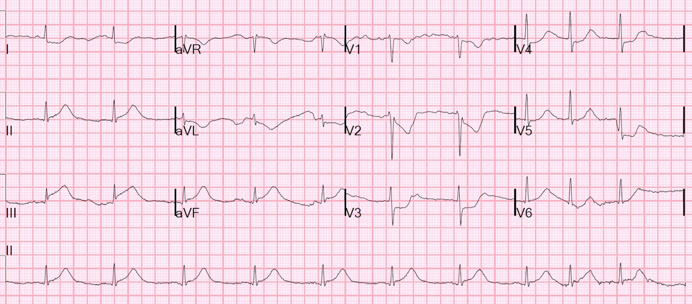
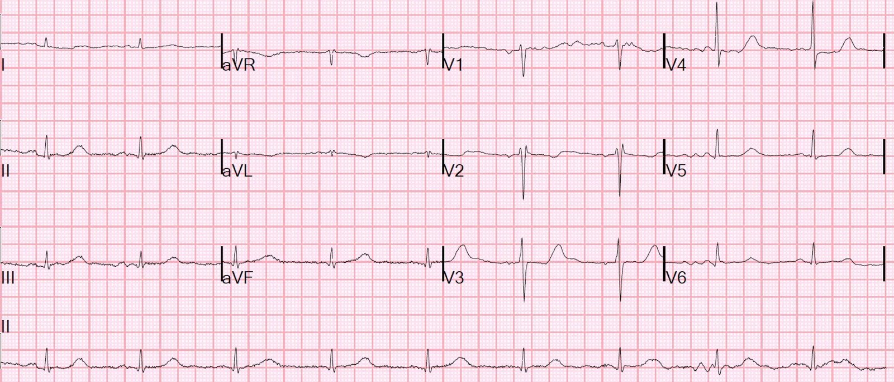
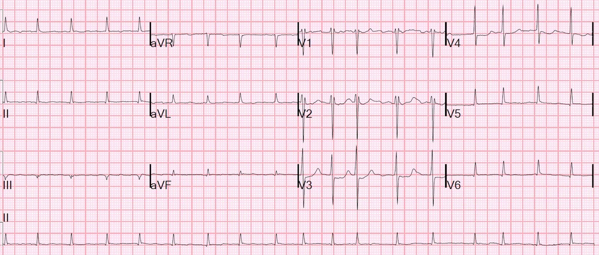
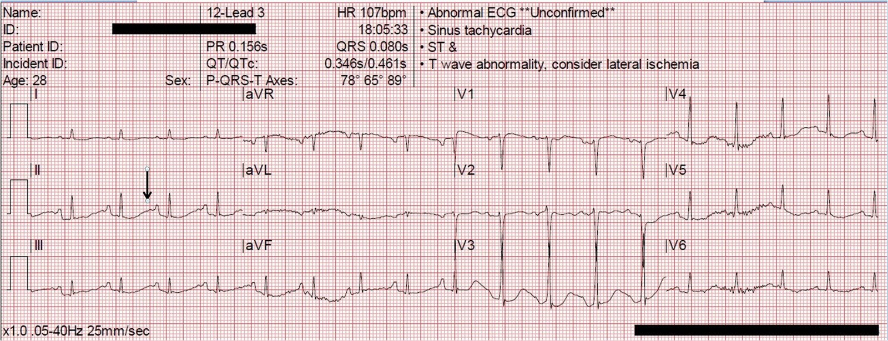

08/04/2016 — STEMI kèm hạ kali máu đe dọa tính mạng và xoắn đỉnh dai dẳng liên tục
Bản dịch tiếng Việt của bài "STEMI with Life-Threatening Hypokalemia and Incessant Torsades de Pointes" – Dr. Smith’s ECG Blog. Giữ nguyên toàn bộ 4 hình ảnh của bản gốc.
Một người đàn ông cuối tuổi trung niên đến viện vì đau ngực đã một giờ. Ông có tiền sử bệnh động mạch vành (CAD) đáng kể với phẫu thuật bắc cầu chủ vành (CABG) x5, rồi CABG lại x 2, cũng như sau đó can thiệp mạch vành qua da (PCI) cầu nối tới RCA (hai lần) và cầu nối tới nhánh chéo. Siêu âm tim gần nhất cho thấy phân suất tống máu (EF) 60%. Ông cũng có tiền sử bệnh thận mạn (CKD) giai đoạn III.
Gần đây ông vừa bị một đợt nhồi máu cơ tim không ST chênh lên (NonSTEMI). Chụp mạch vành khi đó cho thấy có tổn thương cấp ở cầu nối tĩnh mạch hiển (SVG) tới động mạch liên thất sau (PDA) xuất phát từ RCA. Ông được điều trị nội khoa bằng clopidogrel. Nhân viên cấp cứu ngoài viện cho biết ông đã không uống clopidogrel suốt 2 tuần.
Bệnh nhân có vẻ đang trong tình trạng sốc. Siêu âm tại giường không thấy tràn dịch màng ngoài tim, chức năng thất trái giảm mức độ vừa, kèm các đường B của phù phổi.
Đây là điện tâm đồ của ông tại khoa cấp cứu (ED):


Ngoài STEMI, bạn còn lo ngại điều gì nữa?
Xem bên dưới.
Khoảng QT hiệu chỉnh cực kỳ dài, khoảng 500 ms. Điều này gợi ý một bất thường điện giải hoặc tác dụng của thuốc (QT dài mắc phải). Ngoài ra còn có nhịp chậm. Nhịp chậm khiến bệnh nhân có nguy cơ bị xoắn đỉnh (Torsades de Pointes) “phụ thuộc khoảng ngưng” (pause-dependent).
Xoắn đỉnh trong QT dài mắc phải dễ xảy ra hơn nhiều khi có nhịp chậm, vì khoảng QT theo sau một khoảng ngưng dài còn dài hơn nữa. Do đó, xoắn đỉnh trong QT dài mắc phải được gọi là “phụ thuộc khoảng ngưng”: nếu có một nhát xoang sau một khoảng ngưng dài (tạo ra khoảng QT dài hơn), thì một PVC sớm (“hậu khử cực sớm”, EAD) sẽ dễ xuất hiện hơn nhiều trong thời kỳ tái cực và khởi phát xoắn đỉnh. Trình tự thường gặp là: nhát xoang, rồi PVC sớm, rồi một khoảng ngưng dài vì PVC đến sớm, từ đó tạo ra một khoảng QT đặc biệt dài, rồi một PVC khác với hiện tượng “R trên T” (R on T) khởi phát xoắn đỉnh.
Đây là các thuốc ông đang dùng, không thuốc nào làm kéo dài QT:
–Imdur 60mg mỗi ngày một lần
–Furosemide 40mg ngày hai lần (BID)
–Lisinopril 5mg mỗi ngày một lần
–Amlodipine 10mg mỗi ngày một lần
–Digoxin 125mcg cách ngày (q48)
–Clopidogrel 75mg mỗi ngày một lần
–Atorvastatin 20mg mỗi ngày một lần
–Metoprolol 100mg ngày hai lần (BID)
Diễn biến lâm sàng
Kết quả kali máu của ông là 1,8 mEq/L. Mức này thấp đến mức nguy hiểm. Có rất nhiều y văn liên hệ K dưới 3,5 với rung thất trong nhồi máu cơ tim cấp (xem nhiều tài liệu tham khảo bên dưới).
Creatinin là 1,8 mg/dL.
Bệnh nhân được đặt nội khí quản, được dùng thuốc kháng tiểu cầu và chống huyết khối, bắt đầu truyền 10 mEq KCl tĩnh mạch, và được chuyển tới phòng thông tim (cath lab).
Tại phòng thông tim, ông lập tức bị xoắn đỉnh dai dẳng liên tục (incessant), phải khử rung 7 lần và phải đặt máy tạo nhịp qua tĩnh mạch (transvenous pacer) để tạo nhịp vượt tần số (overdrive pacing) với tần số 80. Ông được dùng amiodarone và lidocaine liều nạp rồi truyền duy trì, cùng truyền liên tục K và Mg. Sau khi tạo nhịp, xoắn đỉnh không tái phát.
Sau hồi sức, phát hiện một tổn thương huyết khối hẹp 90% ở chính cầu nối tĩnh mạch hiển tới động mạch liên thất sau phải đó. Tổn thương này được đặt stent.
Bệnh nhân ổn định trở lại.
Điện tâm đồ tiếp theo này được ghi sau khi K đã tăng lên 2,2 mEq/L:


QT ngắn hơn nhiều
Giờ đây có sóng U rõ ở V2 và V3
2 ngày sau, điện tâm đồ này được ghi khi K là 3,5:


Bệnh nhân ổn định và có kết cục tốt.
Bình luận:
STEMI kèm hạ kali máu, nhất là khi có QT dài, khiến bệnh nhân có nguy cơ rất cao bị xoắn đỉnh hoặc rung thất (xem nhiều tài liệu tham khảo, kèm tóm tắt, bên dưới). Hai nhịp này thường không phân biệt được trên máy theo dõi (monitor) hay trên điện tâm đồ. Nếu còn mạch, bạn sẽ gọi đó là xoắn đỉnh. Nếu có VT đa dạng kèm QT dài trên điện tâm đồ nền, thì thường chúng ta gọi đó là xoắn đỉnh, nhưng VT đa dạng không phải xoắn đỉnh có thể chỉ do thiếu máu cục bộ gây ra.
Phân loại thế nào thì cũng không quá quan trọng! Điều quan trọng là điều trị ban đầu giống nhau cho cả hai, nhất là khi không còn mạch: khử rung, như đã làm ở đây (KHÔNG phải sốc điện chuyển nhịp đồng bộ).
Việc nhịp được kiểm soát bằng tạo nhịp vượt tần số cùng kali và magnesi gợi ý rằng đó đúng là xoắn đỉnh, nhưng mặt khác, thuốc chống loạn nhịp và kali cũng đã được dùng.
Xem tại đây về xử trí Polymorphic Ventricular Tachycardia (nhịp nhanh thất đa dạng), bao gồm cả xoắn đỉnh.
Liệu các rối loạn nhịp này có thể phòng ngừa được không?
Tôi tìm được rất ít y văn về điều trị hạ kali máu nặng đe dọa tính mạng. Đặc biệt có rất ít tài liệu về cách điều trị khi K dưới 2, và/hoặc khi có nhồi máu cơ tim cấp. Đây là Hướng dẫn của Hội Tim mạch Hoa Kỳ (American Heart Association):
- 2005 American Heart Association Guidelines for Cardiopulmonary Resuscitation and Emergency Cardiovascular Care (Hướng dẫn của Hội Tim mạch Hoa Kỳ về hồi sinh tim phổi và cấp cứu tim mạch)
Phần 10.1: Các bất thường điện giải đe dọa tính mạng
Treatment of Hypokalemia (Điều trị hạ kali máu)
“Điều trị hạ kali máu gồm hạn chế tối đa việc mất kali thêm và bù kali. Chỉ định dùng kali đường tĩnh mạch khi có rối loạn nhịp hoặc hạ kali máu nặng (nồng độ kali dưới 2,5 mEq/L). Điều chỉnh hạ kali máu từ từ được ưu tiên hơn điều chỉnh nhanh, trừ khi bệnh nhân không ổn định về lâm sàng.
“Trong tình huống cấp cứu, có thể dùng kali theo kinh nghiệm. Khi có chỉ định, lượng kali bù đường tĩnh mạch tối đa nên là 10 đến 20 mEq/giờ, kèm theo dõi điện tâm đồ liên tục trong khi truyền. Có thể truyền dung dịch kali đậm đặc hơn nếu dùng đường truyền tĩnh mạch trung tâm, nhưng đầu ống thông dùng để truyền không được đi vào tới nhĩ phải.
“Nếu ngừng tim do hạ kali máu sắp xảy ra (tức là đang có rối loạn nhịp thất ác tính), cần bù kali nhanh. Truyền liều khởi đầu 10 mEq tĩnh mạch trong 5 phút; nhắc lại một lần nếu cần. Ghi rõ trong hồ sơ bệnh án rằng việc truyền nhanh là có chủ ý, nhằm đáp ứng với tình trạng hạ kali máu đe dọa tính mạng.”
Bình luận:
Phần cuối này phù hợp với ca bệnh này. Ai cũng lo ngại, một cách chính đáng, về việc cho K quá nhanh. Truyền nhanh làm tăng K lên bao nhiêu? Một lần nữa, tôi tìm được rất ít dữ liệu thực nghiệm về vấn đề này (xem 2 nghiên cứu bên dưới, vốn không thực sự trả lời được câu hỏi). Có lẽ có những nghiên cứu trên động vật mà tôi chưa tìm thấy?
Kali toàn cơ thể: một người 70 kg có khoảng 7500 mEq K toàn cơ thể, nhưng dịch ngoại bào chỉ chứa khoảng 48 mEq! Dĩ nhiên, cái khó của việc bù K là lượng dự trữ toàn cơ thể có thể đã bị thiếu hụt nhiều hơn rất nhiều so với lượng có thể bù nhanh được. Mức thiếu hụt ước tính tương ứng với kali huyết thanh giảm từ 4,0 xuống 3,0 mEq/L là 100-200 mEq K toàn cơ thể, và từ 3,0 xuống 2,0 thì lượng mất tương ứng gấp đôi, tức 200-400 mEq.*
[Sterns RH, và cs. Internal potassium balance and the control of the plasma potassium concentration. Medicine (Baltimore). 1981;60:339-54].
Nhưng 100 mEq cho một lần sẽ làm K huyết thanh tăng thêm 30 mEq/L (và gây tử vong ngay lập tức)!!
*Bài tổng quan trên NEJM được dẫn bên dưới (và ACLS, dù giá trị đến đâu đi nữa) nói rằng, tính trung bình, ở một người “điển hình” 70 kg, K huyết thanh giảm 0,3 mEq/L cho mỗi 100 mEq thiếu hụt toàn cơ thể. Tuy nhiên, bài tổng quan này dẫn bài báo của Sterns ở trên, mà theo tôi đọc thì bài đó không nói như vậy.
Đây là vài phép tính cho một liều nhanh an toàn:
Một người 70 kg có khoảng 5 lít máu, trong đó 3 lít là huyết thanh (2 lít là hồng cầu). Nếu cho 10 mEq thật nhanh, không để kịp thời gian dịch chuyển vào nội bào, thì K huyết thanh sẽ tăng khoảng 3,3 mEq/L. Nếu bệnh nhân đang ở mức 1,8, K sẽ tăng lên 5,1 mEq/L. Chỉ cần đưa K lên trên 3,0 là đã giảm nguy cơ rất nhiều (dù trong STEMI, mức tối ưu là khoảng 4,0-4,5 mEq/L). Bơm nhanh 5 mEq sẽ làm K của bệnh nhân này tăng thêm 1,6, từ 1,8 lên 3,4 mEq/L. Cái khó là ước tính lượng đang tiếp tục dịch chuyển. Khi bạn truyền K, nó sẽ bắt đầu dịch chuyển vào các tế bào đang thiếu kali và K huyết thanh sẽ lại giảm nhanh. Vì vậy, ở những bệnh nhân như thế này, điều tối quan trọng là sau mỗi liều bơm phải đo K lặp lại và nhanh chóng, rồi bổ sung khi cần.
Trong ca được trình bày, tôi không rõ 10 mEq K có được cho nhanh hay không. Tôi ngờ rằng nó được cài trên bơm truyền để chạy trong 1 giờ, vốn là cách làm thông thường. Sẽ khó mà thuyết phục được điều dưỡng cho nhanh hơn! Tuy nhiên, trong ca này, cho trong 5-10 phút là phù hợp, kèm theo dõi, rồi đo lại K ngay và sẵn sàng cho thêm.
Vấn đề còn phức tạp hơn ở chỗ hạ kali máu nặng có thể gây tiêu cơ vân và sau đó giải phóng K, dẫn tới tăng kali máu!
________________
Đây là một bài khác về hạ kali máu: Patient with severe DKA, look at the ECG (Bệnh nhân nhiễm toan ceton do đái tháo đường nặng, hãy nhìn điện tâm đồ)
Trong bài này, tôi đã bàn về một bệnh nhân khác mà tôi điều trị: Ngừng tim trước viện do hạ kali máu
Gần đây tôi gặp một ca ngừng tim trước viện mà hóa ra là do hạ kali máu.
Chúng tôi không cứu sống được bà, nhưng chúng tôi đã có tưới máu rất tốt nhờ ép tim bằng thiết bị LUCAS, đến mức máy đo độ bão hòa oxy qua mạch nảy cho dạng sóng rất tốt và độ bão hòa 100%, CO2 cuối thì thở ra là 35, và theo dõi tưới máu não gần như bình thường trong suốt quá trình hồi sức. Đó là trước khi chúng tôi bắt đầu làm ECMO cho rung thất (VFib) kháng trị.
Trong lúc hồi sức, tôi ra y lệnh bơm 10 mEq KCl, nhưng bệnh nhân lại được bơm 40 mEq KCl (nhiều hơn mức khuyến cáo rất nhiều). Bác sĩ nội trú đã ra y lệnh 40 mEq và đó là con số các điều dưỡng nghe được.
40 mEq là quá nhiều? Hay là lượng vừa đúng?
Trái với dự đoán của tôi, sau khi bơm 40 mEq, K chỉ tăng lên 4,2 mEq/L.
Lượng K cần bơm bao nhiêu là đúng trong hạ kali máu đe dọa tính mạng?
Ở một người 70 kg, có 5 lít máu và 3 lít huyết thanh. Vì K cần một khoảng thời gian (bao lâu?) để dịch chuyển ra khỏi lòng mạch vào khoảng kẽ rồi vào nội bào, về lý thuyết 3,0 mEq K được bơm nhanh và đã hòa vào tuần hoàn sẽ làm K huyết thanh tăng ngay 1,0 mEq/L, và 10 mEq sẽ làm tăng 3,3 mEq/L, từ 1,9 lên 5,2. Như vậy, 40 mEq lẽ ra phải làm tăng 13 mEq/L!!
Nhưng đó là trước khi có sự tái phân bố vào khoảng kẽ.
Như tôi đã nêu ở trên, trong ca ngừng tim của chúng tôi, sau khi bơm 40 mEq, K chỉ tăng lên 4,2 mEq/L.
Một người 70 kg có khoảng 13 lít dịch ngoại bào (10 lít dịch kẽ + 3 lít huyết thanh). Vì vậy, nếu K tái phân bố rất nhanh vào khoang ngoại bào này, thì 40 mEq là phù hợp.
Cái khó là ước tính lượng đang tiếp tục dịch chuyển. Khi bạn truyền K, nó sẽ bắt đầu dịch chuyển vào các tế bào đang thiếu kali và K huyết thanh sẽ lại giảm nhanh. Vì vậy, ở những bệnh nhân như thế này, điều tối quan trọng là sau mỗi liều bơm phải đo K lặp lại và nhanh chóng, rồi bổ sung khi cần.
Đây là bài tổng quan về hạ kali máu trên NEJM, nhưng phần lớn nói về nguyên nhân, và nói rất ít về bù nhanh trong hạ kali máu đe dọa tính mạng, NGOẠI TRỪ việc nhấn mạnh bù nhanh nguy hiểm đến mức nào.
Tôi từng đọc các bài báo nói rằng bệnh nhân không có thiếu máu cục bộ có nguy cơ biến chứng do hạ kali máu thấp. Nhưng không phải là hoàn toàn không có nguy cơ. Tôi đã khám người phụ nữ 30 tuổi này, không có bệnh tim, được hồi sức thành công sau rung thất:


Những điểm cần học:
1. Hạ kali máu nặng trong bối cảnh STEMI hoặc rối loạn nhịp là tình trạng đe dọa tính mạng và cần được điều trị rất nhanh. Với K ở mức 1,8 mEq/L, cho 5-10 mEq trong 5-10 phút là phù hợp.
2. Hãy chắc chắn rằng giá trị xét nghiệm của bạn là chính xác và tương ứng với các dấu hiệu trên điện tâm đồ! Nếu điện tâm đồ không cho thấy bằng chứng nào của hạ kali máu, đó có thể là một giá trị giả tạo (artifactual). Nếu điện tâm đồ không cho thấy bằng chứng nào, ít có khả năng đó là tình trạng đe dọa tính mạng!
3. Ở một người 70 kg, một liều bơm nhanh (bolus) 10 mEq sẽ làm tăng K huyết thanh thêm 3,3 mEq/L nếu không có bất kỳ sự dịch chuyển nào vào trong tế bào
4. Tốt nhất là cho liều bơm nhanh như vậy qua đường truyền tĩnh mạch trung tâm, nhưng điều này không phải lúc nào cũng làm được.
5. Rất khó điều chỉnh K nếu không đồng thời điều chỉnh tình trạng magnesi thấp. Trong ca này, Mg là 1,9 mEq/L (trong giới hạn bình thường)
6. Tìm hiểu cách xử trí VT đa dạng, bao gồm cả xoắn đỉnh (Torsades).
Y văn
Hai bài báo về bù kali nhanh
Efficacy and safety of potassium infusion therapy in hypokalemic critically ill patients (Hiệu quả và độ an toàn của liệu pháp truyền kali ở bệnh nhân nặng bị hạ kali máu). Crit Care Med. tháng Năm 1991;19(5):694-9
Mục tiêu: Đánh giá hiệu quả và độ an toàn của truyền dịch bù kali ở bệnh nhân nặng.
Thiết kế: Nghiên cứu đoàn hệ tiến cứu.
Bối cảnh: Đơn vị hồi sức tích cực đa chuyên khoa.
Can thiệp: Truyền kali clorid (20, 30 hoặc 40 mmol trong 100 mL nước muối sinh lý trong 1 giờ) cho bệnh nhân có nồng độ kali huyết thanh <3 .5=”” but=”” style=”font-family: times, “times new roman”, serif;”>3.2 mmol/L (n = 26), 3,0 đến 3,2 mmol/L (n = 11) và</3> [người dịch: đoạn này trong bản gốc bị lỗi mã định dạng nên mất một phần nội dung]
Đo lường và Kết quả: Tất cả bệnh nhân đều dung nạp được việc truyền mà không có bằng chứng tổn hại huyết động, thay đổi điện tâm đồ hay rối loạn nhịp mới cần điều trị. Mức tăng kali tối đa trung bình lần lượt là 0,5 ± 0,3 mmol/L, 0,9 ± 0,4 mmol/L và 1,1 ± 0,4 mmol/L ở các nhóm 20, 30 và 40 mmol. Mức tăng kali huyết thanh đạt tối đa khi kết thúc truyền và có ý nghĩa thống kê (p < .05) so với ban đầu ở tất cả các nhóm. Nồng độ kali đỉnh ở bệnh nhân có chức năng thận bình thường (n = 33) giống với bệnh nhân suy thận (n = 15).
Bài tiết kali qua nước tiểu tăng ở tất cả các nhóm trong khi truyền và có ý nghĩa thống kê (p < .05) ở nhóm 30 và 40 mmol, nhưng không cao hơn ở những bệnh nhân đã dùng thuốc lợi tiểu (n = 8) so với những bệnh nhân không dùng (n = 40).
Kết luận: Ở nhóm bệnh nhân hạ kali máu chọn lọc được nghiên cứu, truyền kali 20 đến 40 mmol trong 1 giờ là an toàn và làm tăng nồng độ kali huyết thanh một cách hiệu quả, theo cách phụ thuộc liều và có thể dự đoán được. Hơn nữa, các kết quả này không phụ thuộc vào chức năng thận nền của bệnh nhân hay việc dùng kèm thuốc lợi tiểu. (Crit Care Med 1991; 19:694)
Concentrated Potassium Chloride Infusions in Critically Ill Patients with Hypokalemia (Truyền kali clorid đậm đặc ở bệnh nhân nặng bị hạ kali máu)
Tạp chí The Journal of Clinical Pharmacology. Tập 34, Số 11, trang 1077–1082, tháng Mười Một năm 1994
Mặc dù truyền kali clorid đậm đặc thường được dùng để điều trị hạ kali máu ở bệnh nhân đơn vị hồi sức tích cực, rất ít nghiên cứu đã khảo sát tác dụng của chúng lên nồng độ kali huyết tương. Bốn mươi bệnh nhân hạ kali máu được truyền 20 mmol kali clorid trong 100 mL nước muối sinh lý trong 1 giờ; 26 bệnh nhân được truyền qua tĩnh mạch trung tâm và 14 bệnh nhân qua tĩnh mạch ngoại biên. Kali huyết tương ([K]p) được đo cách mỗi 15 phút trong và sau khi truyền ở 31 bệnh nhân. ΔK được định nghĩa là hiệu số giữa mỗi lần định lượng kali và nồng độ kali huyết tương ban đầu. Điện tâm đồ được ghi liên tục trong khi truyền và trong khoảng 1 giờ ngay trước khi truyền. [K]p ban đầu trung bình là 2,9 mmol/L và mọi nồng độ huyết tương sau đó đều tăng có ý nghĩa so với ban đầu. [K]p đỉnh trung bình là 3,5 mmol/L, [K]p (1 giờ sau truyền) là 3,2 mmol/L, và ΔK trung bình sau truyền là 0,48 mmol/L (dao động −0,1–1,7 mmol/L). Không xảy ra rối loạn nhịp, thay đổi các khoảng dẫn truyền tim hay biến chứng nào khác. Tần suất nhát ngoại tâm thu thất giảm có ý nghĩa trong khi truyền so với giai đoạn chứng. Nồng độ cao (200 mmol/L) và tốc độ truyền (20 mmol/giờ) của dịch truyền kali clorid được dung nạp tốt, làm giảm tần suất rối loạn nhịp thất và không gây tăng kali máu thoáng qua.
Y văn về hạ kali máu như một yếu tố nguy cơ rung thất trong nhồi máu cơ tim cấp. Tất cả đều có từ thập niên 1980. Việc dùng thuốc lợi tiểu liên quan chặt chẽ với hạ kali máu và rung thất trong nhồi máu cơ tim.
Thiazide-lnduced Hypokalemia: Association With Acute Myocardial Infarction and Ventricular Fibrillation (Hạ kali máu do thiazid: mối liên quan với nhồi máu cơ tim cấp và rung thất)
Mười trong số 59 bệnh nhân (17%) đang dùng một chế phẩm thiazid vào thời điểm bị nhồi máu cơ tim cấp và rung thất. Hạ kali máu có ở bảy trong số tám bệnh nhân (87%) dùng thiazid, trong khi chỉ gặp ở một trong số 38 bệnh nhân (2,6%) không dùng các thuốc này. Nếu có hạ kali máu ở bệnh nhân đang dùng thiazid bị nhồi máu cơ tim cấp, cần điều chỉnh tình trạng này để loại bỏ yếu tố thuận lợi gây rung thất.
(JAMA 239:43-45; 1978). Malignant arrhythmia in relation to serum potassium in acute myocardial infarction. (Rối loạn nhịp ác tính liên quan đến kali huyết thanh trong nhồi máu cơ tim cấp)
Serum Magnesium and Potassium in Acute Myocardial InfarctionInfluence on Ventricular Arrhythmias. (Magnesi và kali huyết thanh trong nhồi máu cơ tim cấp: ảnh hưởng lên rối loạn nhịp thất). Tác giả: Henryk Kafka, MD; Lorrie Langevin, RN; Paul W. Armstrong, MD
Tạp chí Arch Intern Med. 1987;147(3):465-469. doi:10.1001/archinte.1987.00370030069014.
Trong khoảng thời gian 13 tháng, nồng độ kali và magnesi huyết thanh được đo ở 590 bệnh nhân nhập đơn vị chăm sóc mạch vành (CCU). Hạ kali máu, thường không liên quan đến việc dùng thuốc lợi tiểu, xảy ra ở 17% trong số 211 bệnh nhân nhồi máu cơ tim cấp. Bệnh nhân nhồi máu cơ tim cấp có nồng độ kali dưới 4,0 mEq/L (4,0 mmol/L) có nguy cơ rối loạn nhịp thất tăng lên (59% so với 42%). Vì hạ kali máu thường gặp trong nhồi máu cơ tim cấp và liên quan đến rối loạn nhịp thất, nên khuyến cáo đo thường quy nồng độ kali huyết thanh và điều chỉnh kịp thời. Hạ magnesi máu chỉ xảy ra ở 4% bệnh nhân, nhưng thường gặp ở nhóm nhồi máu cơ tim cấp hơn so với nhóm không nhồi máu cơ tim (6% so với 3%). Rối loạn nhịp thất xảy ra ở mười trong số 13 bệnh nhân vừa nhồi máu cơ tim cấp vừa hạ magnesi máu, nhưng tám trong số này cũng có nồng độ kali huyết thanh thấp. Tỷ lệ mắc hạ magnesi máu thấp như vậy không biện minh cho việc đo thường quy nồng độ magnesi huyết thanh. Tuy nhiên, nồng độ trung bình (2,5 ± 0,4 mg/dL [1,03 ± 0,16 mmol/L]) ở một quần thể tham chiếu gồm những người tình nguyện khỏe mạnh lại cao bất ngờ, gợi ý rằng tỷ lệ mắc hạ magnesi máu thấp trong quần thể của chúng tôi có thể không áp dụng được cho các trung tâm khác và có thể phản ánh hàm lượng magnesi cao hơn ở khu vực địa lý của chúng tôi là vùng đông nam Ontario.
Frequency of hypokalemia after successfully resuscitated out-of-hospital cardiac arrest compared with that in transmural acute myocardial infarction (Tần suất hạ kali máu sau ngừng tim ngoài bệnh viện được hồi sức thành công so với trong nhồi máu cơ tim cấp xuyên thành)
Để đánh giá tỷ lệ hiện mắc hạ kali máu trong ngừng tim ngoài bệnh viện, các giá trị kali huyết thanh và pH động mạch ban đầu của 138 bệnh nhân liên tiếp được hồi sức sau ngừng tim đã được xem xét lại. Để so sánh, các biến số tương tự được xem xét ở 62 bệnh nhân liên tiếp bị nhồi máu cơ tim cấp (AMI) xuyên thành mà không ngừng tim. Nồng độ kali huyết thanh trung bình sau hồi sức ngừng tim thấp hơn (3,6 ± 0,6 mEq/lít) so với trong AMI (3,9 ± 0,5 mEq/lít) (p < 0,005). Tỷ lệ mắc hạ kali máu (kali dưới 3,5 mEq/lít) cao hơn ở bệnh nhân bị ngừng tim (41%) so với bệnh nhân AMI không ngừng tim (11%) (p < 0,001). Hạ kali máu thường gặp sau ngừng tim bất kể có xảy ra AMI vào thời điểm ngừng tim hay không. Hạ kali máu sau ngừng tim không phụ thuộc vào pH động mạch, việc điều trị bằng epinephrine hay bicarbonat trong khi hồi sức, hoặc việc điều trị trước đó bằng thuốc lợi tiểu, digoxin hay propranolol. Ở 10 bệnh nhân hạ kali máu rõ rệt, nồng độ kali huyết thanh trở về bình thường nhanh chóng (16 giờ) trong thời gian nằm viện, mặc dù chỉ 29% lượng kali cần bù dự đoán được truyền trước khi kali trở về bình thường. Như vậy, hạ kali máu phổ biến ngay sau ngừng tim ngoài bệnh viện, trong khi ít gặp trong AMI khi không có ngừng tim. Nguyên nhân và hậu quả điện sinh lý của tình trạng hạ kali máu này chưa được biết; trong hầu hết các trường hợp, nó dường như do kali dịch chuyển khỏi khoang nội mạch chứ không phải do thiếu hụt kali toàn cơ thể.
Serum potassium concentration as a risk factor ofventricular arrhythmias early in acute myocardialinfarction (Nồng độ kali huyết thanh như một yếu tố nguy cơ rối loạn nhịp thất giai đoạn sớm của nhồi máu cơ tim cấp) (toàn văn, Circulation 1985; 71:645-649)
Sáu mươi bệnh nhân nhồi máu cơ tim cấp lần đầu và hiện không điều trị bằng thuốc tác động lên tim được đưa vào một nghiên cứu tiến cứu về mối liên quan giữa nồng độ kali huyết thanh và sự xuất hiện sớm của nhịp nhanh thất và ngoại tâm thu thất (PVC). Nồng độ kali huyết thanh (dao động 2,5 đến 5 mmol/lít) được định lượng 3,8 ± 2,5 giờ (trung bình ± SD) sau khởi phát nhồi máu, và theo dõi Holter được thực hiện trong 12 giờ tiếp theo. Trong phân tích đa biến, nồng độ kali huyết thanh liên quan nghịch còn tuổi liên quan thuận với nhịp nhanh thất. Trong các phân nhóm PVC (đơn ổ thường xuyên, đa ổ, cặp đôi, nhịp đôi), nồng độ kali huyết thanh liên quan nghịch với phân nhóm đơn ổ thường xuyên; tăng huyết áp liên quan với cặp đôi và với sự hiện diện của bất kỳ phân nhóm nào, còn nồng độ aspartate aminotransferase huyết thanh liên quan với PVC đa ổ. Suy tim dẫn đến tử vong liên quan với tất cả các phân nhóm PVC. Nồng độ kali huyết thanh là một yếu tố dự báo nghịch, độc lập, cho sự xuất hiện của nhịp nhanh thất và PVC đơn ổ thường xuyên trong giai đoạn sớm của nhồi máu cơ tim cấp.
Hypokalaemia and ventricular fibrillation in acute myocardial infarction (Hạ kali máu và rung thất trong nhồi máu cơ tim cấp) (toàn văn pdf; Br Heart J 1983;50:525-529)
Nồng độ kali huyết thanh lấy lúc nhập viện liên quan nghịch với tỷ lệ mắc rung thất ở 289 phụ nữ và 785 nam giới bị nhồi máu cơ tim cấp, trong đó 92 người bị rung thất. Hạ kali máu (nồng độ kali huyết thanh nhỏ hơn hoặc bằng 3,5 mmol/l) được phát hiện ở 122 bệnh nhân (11,4%). Tỷ lệ mắc rung thất cao hơn có ý nghĩa ở bệnh nhân hạ kali máu so với những người được xếp loại kali máu bình thường (nồng độ kali huyết thanh lớn hơn hoặc bằng 3,6 mmol/l) (17,2% so với 7,4%). Nguy cơ rung thất tăng lên ở nhóm hạ kali máu là gần như nhau ở nữ và nam. Trong thời gian nằm viện, bệnh nhân hạ kali máu bị rung thất sớm hơn có ý nghĩa so với bệnh nhân có kali máu bình thường (trung vị 0,3 giờ so với 7 giờ). Hạ kali máu thường gặp ở nữ (17,3%) hơn ở nam (9,2%), và 55% bệnh nhân hạ kali máu đã được điều trị bằng thuốc lợi tiểu trước khi nhập viện so với 22% ở nhóm kali máu bình thường. Hạ kali máu lúc nhập viện dự báo khả năng mắc rung thất tăng lên và rung thất xảy ra sớm ở bệnh nhân nhồi máu cơ tim cấp.